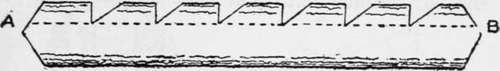

Axemanship. Qualities And Utilization Of Wood. Part 3
Description
This section is from the book "Camping And Woodcraft", by Horace Kephart. Also available from Amazon: Camping and Woodcraft.
Axemanship. Qualities And Utilization Of Wood. Part 3
Sawing
If there is a sharp and well set crosscut saw in the outfit, it makes the work of felling and logging a great deal easier. The veriest tvro can soon learn to saw tolerably well. Observe that your sole duties are to pull and help guide the saw straight. If you push, as one would with a bucksaw, the other fellow may let you do all the work. If you don't do your share of the pulling, your partner, if he be a woodsman, is apt to remonstrate "Say, you! I don't mind you riding the saw, but don't drag your feet".
To fell with a saw, first cut a small notch with the axe on the side toward which you want the tree to fall. Then saw from the opposite side, beginning a little higher than the notch, and sawing diagonally down to meet it. When the saw gets well into the wood it will begin to bind from the weight of the tree. Then relieve it by driving a wedge or glut into the kerf behind the saw. Drive the wedge in still farther as you progress, and it will tilt the tree in the right direction. When you hear the first premonitory crack, or see that the tree is near the toppling point, one man will quickly remove the handle at his end; the other will saw away until the tree sways, and then pull the saw out. A log should be laid for the butt to fall on.
In sawing up large logs, wedges are used in the same way to keep the saw running free.
Qualities Of Woods
The working qualities of common woods ought to be known by every one who has occasion to use timber, and especially by a woodsman, who may at any time be driven to shifts in which a mistake in choosing material may have disagreeable consequences. A few simple tables are here given, which, it is hoped, may be of assistance. Only common native trees are included. The data refer to the seasoned wood only, except where green is specified. Such tables might easily be extended, but mine are confined to the qualities of most account to campers and explorers, and to trees native to the region north of Georgia and east of the Rocky Mountains.
Very Hard Woods | ||
Osage Orange | (hardest), Persimmon, | |
Dogwood, | Hickory, | |
Black Haw, | Service-berry, | |
Yellow Locust, | Black Jack Oak, | |
Post Oak, | Chestnut Oak, | |
Overcup Oak, | Mountain Laurel, | |
Sugar Maple, | Winged Elm. | |
Crab-Apple, | ||
Hard Woods | ||
Other Oaks, | Pecan, | |
Hornbeam, | Black Birch, | |
Ash, | Hackberry, | |
Elm, | Plum, | |
Cherry, | Sourwrood, | |
Beech, | Sour Gum, | |
Tupelo, | Walnut, | |
Red-bud, | Silver Maple, | |
Red Maple, | Mulberry, | |
Holly, | Honey Locust, | |
Sycamore, | Yellow Birch. | |
Yellow Pine, | ||
Very Soft Woods | ||
Spruce, | Balsam Fir, | |
Balsam Poplar, | Catalpa, | |
White Pine, | Buckeye, | |
Pawpaw, | Basswood, | |
Aspen, | Arbor-vitae (softest). | |
(Common woods | not mentioned above are of | |
medium softness). | ||
Very Strong Woods | ||
Yellow Locust, | Pignut Hickory, | |
Yellow Birch, | Chestnut Oak, | |
shingle Oak, | Black Birch, | |
Shellbark Hickory, | Spanish Oak, | |
Yellow Pine, | Sugar Maple, | |
Hornbeam, | Beech, | |
Service-berry, | Osage Orange, | |
Big-bud Hickory, | Bitternut Hickory. | |
Basket Oak, | ||
Strong Woods | ||
Other Oaks, | Rock Elm, | |
Paper Birch, | Water Locust, | |
Silver Maple, | Chinquapin, | |
Red Birch, | Honey Locust, | |
Dogwood, | Tamarack, | |
Ash, | Loblolly Pine, | |
Persimmon, Plum, White Elm, Cherry, Red Pine, | Slippery Elm, Black Walnut, Sour Gum, Red Maple. |
Very Stiff Woods | |
Yellow Birch, Sugar Maple, Spanish Oak, Hornbeam, Paper Birch, Tamarack, | Yellow Pine, Black Birch, Shellbark Hickory, Overcup Oak, Yellow Locust, Beech. |
Very Touah Woods | |
Beech, Osage Orange, | Water Oak, Tupelo. |
Tough Woods | |
Black Ash, Basswood, Yellow Birch, Dogwood, Sour Gum, Hornbeam, Basket Oak, Overcup Oak, Yellow Pine, Black Walnut, | White Ash, Paper Birch, Cottonwood, Elm, Hickory, Liquidambar, Bur Oak, Swamp White Oak, Tamarack. |
(Saplings generally are tougher than mature tree* of the same species). | |
Woods that Split Easily | |
Arbor-vitae, Basswood, Cedar, Chestnut, Slippery Elm (green), Hackberry, The Soft Pines, Spruce, Ash, Beech (when green), | White Birch, Black Birch (green), Dogwood (green), Balsam Fir, Basket Oak, White Oak, Red Oak, shingle Oak, Black Oak, Water Oak. |
Woods Difficult to Split | |
Blue Ash (seasoned), Buckeye, White Elm, Sour Gum, | Box Elder, Wild Cherry, Winged Elm (unwedge-able), |
Liquidambar, | Hemlock, |
Sugar Maple (seasoned), Honey Locust (seasoned), | |
Tupelo (unwedgeable), | Sycamore. |
Woods that Separate Easily into Thin Layers | |
Black Ash, | Basket Oak. |
Flexible, Pliable Woods | |
Basswood, | Elm, |
Hackberry, | Big-bud Hickory, |
Red-bud, | Yellow Poplar. |
Witch Hazel, | |
Springy Woods | |
Black Ash, | White Ash, |
Hickory, | Hornbeam, |
Honey Locust, | Yellow Locust, |
White Oak, | Osage Orange, |
Service-berry, | Spruce. |
Woods Easily Wrought | |
Basswood, | Black Birch, |
Paper Birch, | Red Birch, |
Buckeye, | Butternut, |
Catalpa, | Cedar, |
Cherry, | Chestnut, |
Cottonwood, | Cypress, |
Hackberry, | Red Maple, |
Silver Maple, | White Pine, |
Yellow Poplar, | Black Walnut. |
Compact Woods (Not Liable to Check) | |
Arbor-vitae, | Red Mulberry, |
The Ashes, | Basket Oak, |
The Aspens, | Bur Oak, |
Basswood, | Willow Oak, |
Balsam Fir, | Pecan, |
The Birches (except | Persimmon, |
White Birch), | Gray Pine, |
Box Elder, | Jersey Pine, |
Buckeye, | Long-leaved Pine, |
Butternut, | Pitch Pine, |
Catalpa, | Red Pine, |
The Cedars (very), | Short-leaved Pine, |
The Cherries, | White Pine, |
Cucumber, | The Poplars, |
The Elms, | Red-bud, |
Hackberry, | Silver-bel!, |
Big Shellbark Hickory, | Sorrel Tree, |
Water Hickory, | The Spruces, |
Holly (very), | Tamarack, |
Hop Hornbeam, | The Thorns, |
Laurel (very), | Witch Hazel, |
The Magnolias, | Ye)iow Wood. |
The Maples, | |
Woods Liable to Check in Seasoning | |
Beech, | White Birch, |
Chestnut, | Crab-apple, |
Dogwood, | Sour Gum, |
Hickory (except Shellbark)Hornbeam, | |
Yellow Locust, | Most Oaks, |
Sassafras, | Sycamore. |
Black Walnut, | |
Woods Liable to Shrink and Warp | |
Chestnut, | Cottonwood, |
White Elm, | Sour Gum |
Hemlock, | Shellbark Hickory, |
Liquidambar, | Pin Oak, |
Loblolly Pine, | Sycamore. |
Yellow Poplar, | |
Woods Difficult to Season | |
Beech, | Cottonwood, |
Sour Gum, | Sugar Maple, |
Red Oak, | Rock Chestnut Oak, |
Water Oak, | Osage Orange, |
Woods that Can Be Obtained in Wide Boards Free from Knots | |
Basswood, | Cottonwood, |
Cypress, | Yellow Poplar, |
Woods Durable in Soil, Water and Weather | |
Arbor-vitae, | Butternut, |
Catalpa, | Cedar, |
Cherry, | Chestnut, |
Cucumber, | Cypress, |
Slippery Elm, | Hop Hornbeam, |
Juniper, | Kentucky Coffee Tree |
Honey Locust, | Yellow Locust, |
Mulberry, | Bur Oak, |
Chestnut Oak, | Overcup Oak, |
Post Oak, | Rock Chestnut Oak, |
Swamp White Oak, | White Oak, |
Osage Orange, | Yellow Pine (long leaved) |
Pitch Pine, | Sassafras, |
Tamarack, | Black Walnut. |
Perishable Woods | |
White Birch, | Box Elder |
Paper Birch, | Silver Maple, |
Hackberry | Pin Oak, |
Black Jack Oak, | Water Oak, |
Spanish Oak, | The Poplars, |
Lojblolly Pine, | Sycamore. |
Service-berry, | |
(Most woods are durable when not exposed to alternate wetting and drying. Sapwood is more liable to decay than heart-wood, as a rule', but this is not true of Paper Birch-) | |
Resinous Woods | |
Gray Pine (very) , | Red Pine, |
Jersey Pine (very), | Short-leaved Pine, |
Long-leaved Pine (very), | The Spruces. |
Pitch Pine (very), | |
Close-grained Woods | |
Blue Ash, | Laurel, |
The Aspens, | Liquidambar, |
Basswood, | Yellow Locust, |
Red Bay (very), | Magnolia, |
Beech, (very), | The Maples, |
Black Birch, | Basket Oak, |
Paper Birch (very), | Bur Oak, |
Red Birch, | Chestnut Oak, |
White Birch, | Overcup Oak, |
Yellow Birch-, | Post Oak, |
Box Elder, | Rock Chestnut Oak, |
Buckeye, | Swamp White Oak, |
The Cedars (very), | White Oak, |
The Cherries, | Osage Orange |
Cottonwood, | (extremely), |
Crab-apple (very), | Pecan, |
Cucumber, | Persimmon (very), |
Cypress, | Short-leaved Pine |
Dogwood, | (generally), |
Rock Elm (very), | White Pine (very), |
Slippery Elm (very), | Plum, |
Winged Elm very), | The Poplars, |
Big Shellbark Hickory | Service-berry, |
(very), | Silver-bell, |
Bitter-nut Hickory, | Sorrel Tree (very), |
Mocker-nut Hickory (very).The Spruces, | |
Pig-nut Hickory, | Sycamore (very), |
Water Hickory (very), | The Thorns, |
Holly (very), | Tulip, |
Hornbeam (Ironwood), | Witch Hazel (very), |
Hop Hornbeam (very) | vellow Wood. |
Very Heavy Woods | |
Chestnut Oak, | Pig-nut Hickory, |
Shellbark Hickory, | Mocker-nut Hickory. |
Hop Hornbeam, | Basket Oak, |
Overcup Oak, | Persimmon, |
Post Oak, | Service-berry, |
Flowering Dogwood, | Swamp White Oak, |
Big Shellbark Hickory, Osage" Orange. | |
Very Light Woods | |
White Basswood, | White Spruce, |
Box Elder , | Cottonwood, |
Sweet Buckeye, | Balsam Fir, |
Hemlock, | White Pine, |
Yellow Poplar, | Balsam Poplar, |
Quaking Aspen, | White Cedar, |
Butternut, | Arborvitae. |
The weight of seasoned wood is no criterion of the weight of the green wood, which must be learned by experience. For example, the dry wood of the Sequoia, or California Big Tree, is lighter than White Pine, but the freshly cut log is so heavy that it will scarcely float in water. Black Walnut and Sour Gum are only moderately heavy when seasoned, but the green logs will not float.
Woods For Special Purposes
These tables are only general guides. Individual trees of the same species vary much in their qualities. In selecting wood for a special purpose one will be governed, of course, by the material at hand. Suppose he wants a very hard and close-grained wood: He may choose, according to circumstances, beech, birch, dogwood, rock elm, mocker-nut (white-heart) hickory, holly, hornbeam, yellow locust, sugar maple, Osage orange, persimmon, service-berry, or whatever he can get on the spot that will answer his purpose. If it must also be strong, tough, elastic, or have some other merit, the choice will be narrowed.
Timber cut in the spring of the year, when the sap is up is much inferior in quality and durability to that which is cut in autumn and winter, when the sap is down. Sap softens the fibers, sours in cut timber, and carries the seeds of dry-rot or decay.
Hewing Timber
To flatten a log, as for a bench seat, if ft will not split straight: Score the top of it with notches of uniform depth, like saw teeth, but as far apart as the stuff will block off evenly; then chop out the blocks and hew smooth (along the dotted line A B in Fig. 40)
When much hewing is to be done, a broad-axe or adze is used; but both of these tools are difficult and dangerous for an inexperienced man to handle, and neither of them will be obtainable except where skilled artisans can be hired to wield them.
Fig. 40. Scoring and Hewing.
Splitting Timber
Logs split through the center into half-logs with one face flat are very useful in cabins and about camp, for tables, benches, shelves, and other rustic furniture. They also are employed in making slab camps, puncheons for flooring, and small enclosed cabins. In the latter case, split logs have certain advantages over round ones. They take only half as many trees, they are easier for one or two men to handle, easier to notch for the corners, make close joints without much, if any chinking, and leave a flat surface for the interior of the cabin. They may also be used vertically instead of horizontally, and in this way short logs can be utilized.
The only implements needed in splitting logs are an axe (single-bitted) and a maul and some wooden wedges made with the axe. The maul is made in club shape (Fig. 41). Beech, oak and hickory are good materials, but any hardwood that does not splinter easily will do. Choose a sapling about five inches thick at the butt, not counting the bark. Dig a little below the surface of the ground and cut the sapling off where the stools of the roots begin. (The wood is very tough here, and this is to be used for the large end of the maul, which should be about ten inches long). From this, forward, shave down the handle, which should be twenty inches long. Thus balanced, the maul will not jar one's hands.
Gluts (Fig. 42) are simply wooden wedges. The best woods for them are dogwood and hornbeam or ironwood, as they are very hard and tough, even when green; but use whatever is handy. Chop a sapling of suitable thickness, and make one end wedged-shaped; then cut it off square at the top ; and so continue until you have all the gluts you want. It takes no mean skill to chop a glut to a true wedge shape, and much depends upon getting the angles and surfaces correctly proportioned. A novice is apt to make a glut too short and thick, but it must not be quite so slender as a steel wedge, for it would splinter too readily.
Continue to:
- prev: Axemanship. Qualities And Utilization Of Wood. Part 2
- Table of Contents
- next: Axemanship. Qualities And Utilization Of Wood. Part 4